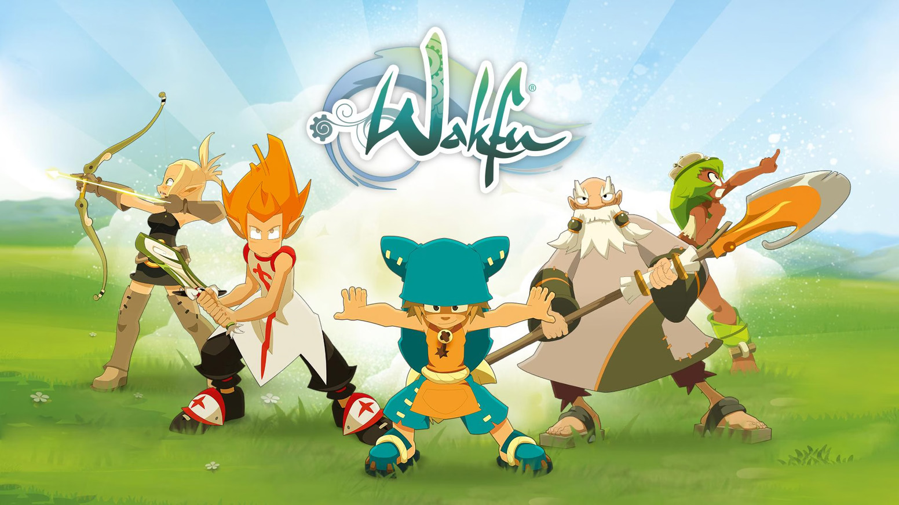

2001 :
Création d'ankama
Ankama est créée le 15 mai 2001 et s'engage dans le développement web et les jeux vidéo.
Dofus est un jeux vidéo du type MMORPG (jeu de rôle en ligne massivement multijoueur). C'est l'un des jeux
pionner dans le domaine "game as a service"
pionner dans le domaine "game as a service"
2004 :
DOFUS
2006 :
WAKFU

En 2006 commence le projet wakfu. La première apparition de ce projet est sous forme d'un jeu vidéo.
Annoncé d'abord en 2006, il sortira en 2012.
Wakfu est pensé dans un système transmédia. Cela se caractérise par le fait que wakfu à une histoire
commune entre le jeu vidéo et une série d'animation. Cette série d'animation à débuter en 2008.
Annoncé d'abord en 2006, il sortira en 2012.
Wakfu est pensé dans un système transmédia. Cela se caractérise par le fait que wakfu à une histoire
commune entre le jeu vidéo et une série d'animation. Cette série d'animation à débuter en 2008.